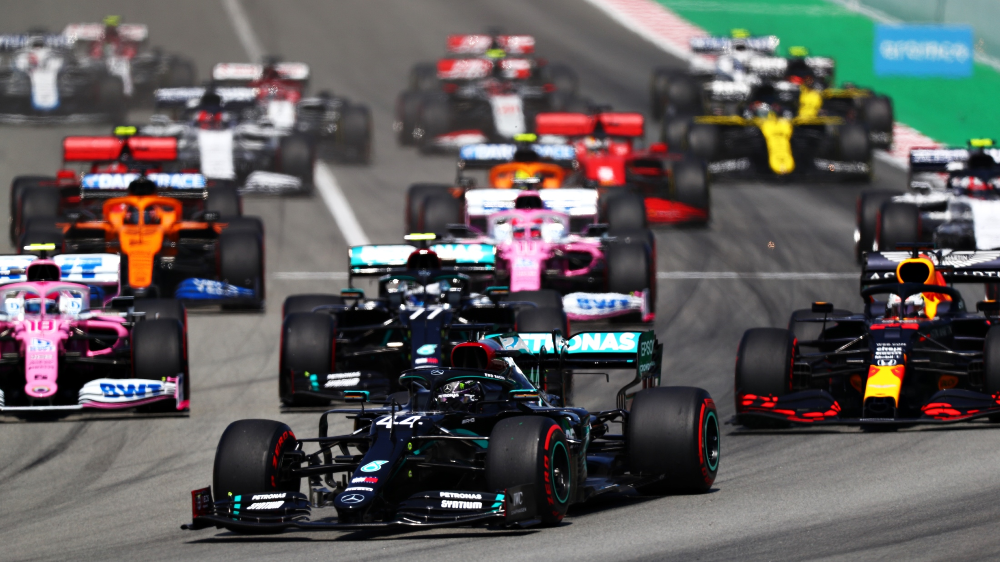
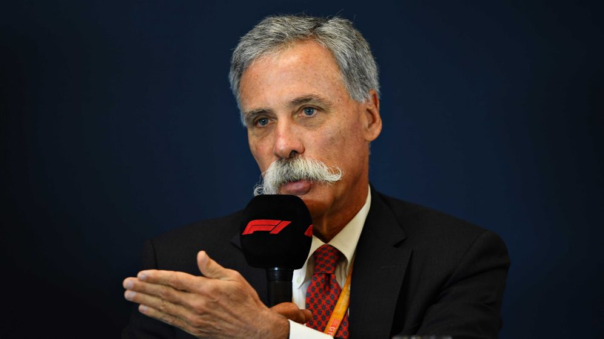

CONFIRMED: All 10 teams reach new Formula 1 Concorde Agreement


F1 CEO Chase Carey said the new agreement would "create an environment that is both financially fairer and closes the gaps between teams"